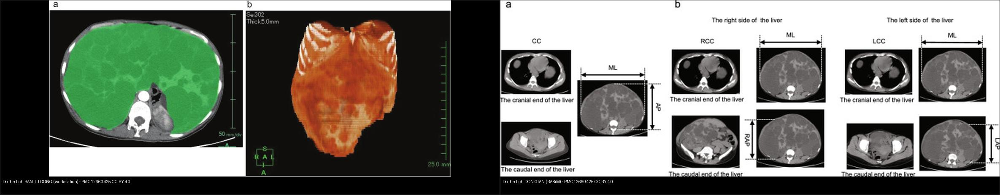
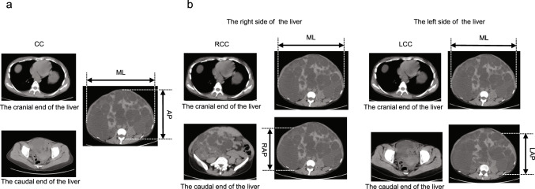
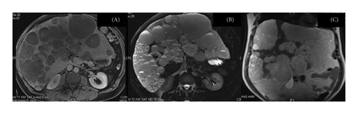
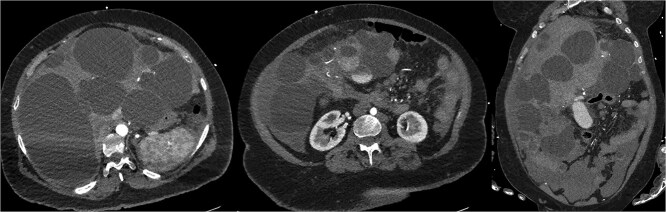
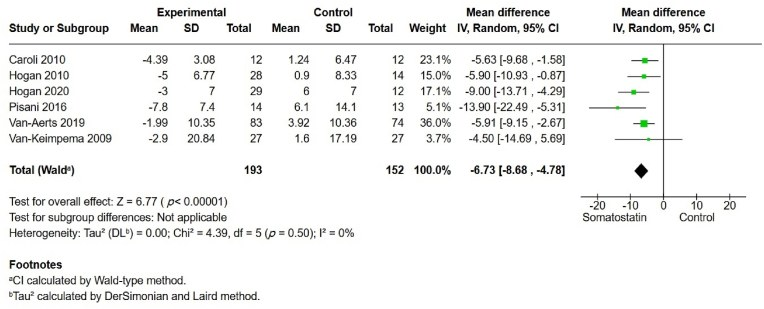
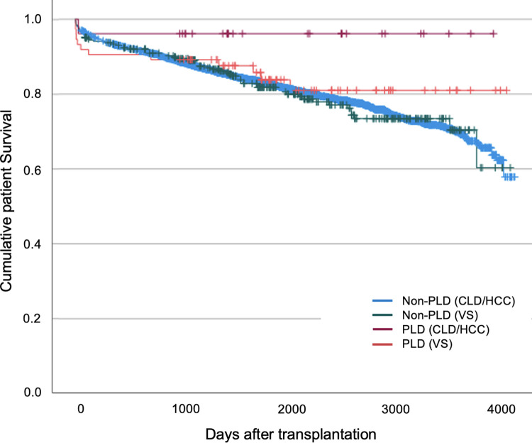
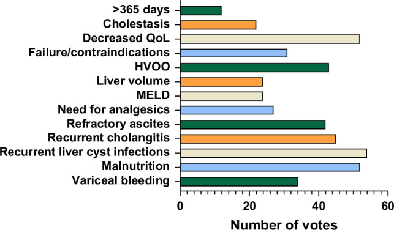

126 — Đo thể tích gan & điều trị nội khoa bệnh gan đa nang / Liver volumetry & medical therapy in polycystic liver disease (PLD)
Tags: pattern:gan-da-nang vung:gan score:Schnelldorfer score:Gigot protocol:do-the-tich-gan-MRI-CT incidentaloma:nang-gan
Mức chắc chắn (certainty): tổng hợp y văn (literature synthesis) — nhóm tự biên từ y văn mở (iLIVER 2026 PMC12870861, Clin Exp Nephrol 2025 PMC12660425, Liver Transpl 2026 PMC12991327, Turk J Gastroenterol 2026 PMC13382228, PLoS One 2024 PMC10760649, Sci Rep 2021 PMC8648823, Case Rep Hepatol 2026 PMC13478724, J Surg Case Rep 2025 PMC12222048), số liệu lấy nguyên từ bài gốc.
1. Tổng quan — vì sao phải ĐO THỂ TÍCH GAN, và tại sao nang là "nước"
- Bệnh gan đa nang (polycystic liver disease — PLD): ≥ 20 nang gan (một số tài liệu dùng ngưỡng ≥ 10) KHÔNG thông với cây mật (PMC12870861, PMC12660425). Là biểu hiện ngoài thận của ADPKD (nang gan có ở > 90% người ADPKD trên 35 tuổi) hoặc thể đơn độc ADPLD (gen PRKCSH/SEC63, ~1/158.000); ARPKD (gen PKHD1, ~1/20.000–1/40.000) sinh xơ gan bẩm sinh. ADPKD nền tảng: ~1/500–1/1.000, chiếm 5–10% ca suy thận giai đoạn cuối.
- Cơ chế nang & TẠI SAO cận lâm sàng là "đo thể tích": tăng cAMP trong tế bào đường mật nang (cholangiocyte) → bài tiết dịch nang + tăng sinh biểu mô ống mật → nang lớn dần và gan to theo thể tích. Bệnh nhân thường không triệu chứng cho tới khi thể tích gan đủ lớn → hình ảnh không dừng ở "có nang hay không" mà là "GAN TO BAO NHIÊU mL" để quyết định điều trị và đo đáp ứng. Thể tích gan tăng theo thời gian: đoạn MRI ca nặng dài 31 cm (trước đó 27 cm) (PMC13478724).
- TẠI SAO nang cho hình ảnh "nước" (mô bệnh học → vật lý): nang là khoang kín chứa dịch huyết thanh giống huyết tương, không mạch máu → trên MRI T1 tối, T2 rất sáng (thời gian hồi phục T2 dài của nước tự do), trên CT ~0–15 HU, không ngấm cản quang (không có mao mạch nang); vách mỏng chỉ vài mm nên không thấy được khi nang nhỏ. Dịch nang không hạn chế khuếch tán (ADC không tối) trừ khi có máu/mủ trong nang.
- Ngưỡng định lượng nằm lòng: tổng thể tích gan (total liver volume — TLV) hoặc thể tích gan hiệu chỉnh theo chiều cao (height-adjusted liver volume — htLV) là endpoint chuẩn; phương pháp vàng là đo bán tự động trên workstation (vẽ tay viền gan từng lát). Phương pháp đơn giản hóa BASiM (đo 3 chiều) có độ tin cậy giữa hai người đọc ICC 0,991 (95% CI 0,986–0,994), cao hơn QDSiM ICC 0,851, khớp với bán tự động ICC 0,924 và nhanh hơn (61 ± 4 s so với 107 ± 9 s, p = 0,01) (PMC12660425).
- Bối cảnh lâm sàng: đa số PLD không triệu chứng; phần nang nhiều gây đau bụng, ăn mau no, buồn nôn, khó thở, suy dinh dưỡng/sarcopenia; biến chứng xuất huyết nang, nhiễm khuẩn nang, tăng áp cửa, vàng da tắc mật, hội chứng kiểu Budd-Chiari. Thể tích gan không phải lúc nào cũng song hành với triệu chứng → cần thêm bảng hỏi triệu chứng PLD-Q / POLCA (PMC13382228).
2. Mẫu hình + chẩn đoán phân biệt theo "mức gan to" (gamut)
- Tình cờ / nhẹ (gan bình thường hoặc hơi to, vài-vài chục nang): PLD giai đoạn sớm ở ADPKD; nang gan đơn thuần; nhiều nốt < 1,5 cm "trời sao" T2 = u mô đệm đường mật (von Meyenburg); giãn đường mật túi + central dot, THÔNG cây mật = Caroli.
- Gan to vừa–nhiều (hàng trăm nang, gan chèn ép): PLD/ADPKD tiến triển (chỉ định theo dõi thể tích, thuốc, can thiệp).
- Gan to khổng lồ + biến chứng: xuất huyết nang (dịch nang tăng đậm độ/hemoperitoneum), nhiễm khuẩn nang (khí trong nang, ngấm viền), tăng áp cửa/giãn tĩnh mạch thực quản, tắc mật, hội chứng kiểu Budd-Chiari do chèn ép TM gan.
- Cạm bẫy "giả PLD": vô số di căn gan dạng nang (vd u thần kinh nội tiết tụy — PMC13634188), nang sán (thành dày, tách màng), di căn buồng trứng nhầy, nang quanh đường mật (bám bó mạch cửa) — chốt bằng thành nang + ngấm + có u nguyên phát + tiền sử.
- Gợi nhớ "P-C-V-M": PLD (ADPKD/ADPLD) · Caroli (thông mật) · Von Meyenburg (nốt nhỏ) · Metastases/nang sán (giả PLD).
3. Bảng so sánh phân biệt (ma trận đối chiếu)
| Thực thể (entity) | Hình ảnh điển hình | Chốt vào (rule-in) | Chốt loại (rule-out) | Gợi ý xác nhận |
|---|---|---|---|---|
| PLD (ADPKD/ADPLD) | Rất nhiều nang tự do đa dạng kích thước toàn gan, dịch nước 0–15 HU, T2 rất sáng, không ngấm; thường kèm nang thận; gan to | ≥ 20 nang gan (≥ 10 cũng đủ cảnh giác) + gan to + không thông cây mật + bối cảnh ADPKD/tiền sử gia đình | Nốt < 1,5 cm đều T2 sáng (von Meyenburg), có thông mật (Caroli), hay nốt ngấm/vách dày (di căn/u nhầy) | MRI/CT đo TLV/htLV bán tự động; gene PKD1/PKD2/PRKCSH/SEC63 |
| U mô đệm đường mật (von Meyenburg) | Nhiều nốt nhỏ < 1,5 cm rải rác, T1 tối/T2 rất sáng "trời sao", không ngấm, không thông mật | Nốt nhỏ ĐỀU + không ngấm + không thông cây mật + KHÔNG có u nguyên phát | Nang lớn đa dạng có thận nang → PLD; nốt ngấm → di căn | MRCP; theo dõi không lớn (bài 123) |
| Bệnh Caroli | Giãn đường mật từng đoạn dạng túi + central dot, thông cây mật | Thông cây mật (MRCP) + central dot | Không thông mật → PLD/von Meyenburg | MRCP; tầm soát cholangiocarcinoma suốt đời (bài 123) |
| Di căn gan dạng nang "giả PLD" | Nhiều nang vách dày/nốt đặc NGẤM, tăng kích thước, có u nguyên phát | Nốt/vách ngấm + có u nguyên phát (pNET, buồng trứng…) | Dịch thuần nhất, không ngấm, không có u tiên phát → PLD | CT đa thì/PET; đối chiếu phim cũ (PMC13634188) |
| Nang xuất huyết/nhiễm khuẩn trong PLD | Trong ổ nang: dịch tăng đậm độ (máu), khí/mức dịch–khí + ngấm viền (mủ); có thể hemoperitoneum | Máu: nang tăng đậm độ cấp; Mủ: khí + ngấm viền + sốt | Nang dịch thuần nhất không ngấm → nang thường | CT cản quang; cấy dịch nang |

Trái: đo bán tự động (vẽ viền gan từng lát trên workstation — "chuẩn vàng"). Phải: đo đơn giản hóa BASiM (nhân các chiều) — ICC 0,991, nhanh 61 ± 4 s. Nguồn: Hattanda F et al., Clin Exp Nephrol 2025 (PMC12660425), CC BY 4.0. Ảnh ghép letterbox.4. Protocol đo thể tích + phân độ + điều trị (có flowchart)
- Chọn phương thức: MRI là tối ưu (phát hiện nang nhỏ tốt hơn, không tia xạ, đo thể tích lặp lại) khi nghi PLD/biến chứng; CT khi cần đánh giá tăng áp cửa/biến chứng cấp. Đo TLV/htLV bằng bán tự động (hoặc BASiM khi thiếu công cụ); ghi rõ phương pháp + phần mềm vì đổi phương pháp làm sai lệch "đáp ứng".
- Phân độ Gigot (số + kích thước nang, nhu mô còn lại) — hướng dẫn chọn can thiệp (bài 123): I < 10 nang lớn; II nang rải rác còn nhận ra nhu mô; III nang nhỏ–vừa dày đặc, còn rất ít nhu mô.
- Phân độ Schnelldorfer (A–D) — phân biệt ai cần CẮT GAN vs ai cần GHÉP GAN (PMC13382228):
- A: triệu chứng không/ít → theo dõi hoặc điều trị nội khoa.
- B: triệu chứng vừa–nặng, có ≥ 2 "khoang" nhu mô gan tương đối lành → mở cửa sổ nang (fenestration).
- C: 1 khoang nhu mô lành → cắt bán phần gan (có thể ± fenestration phần còn lại).
- D: < 1 khoang nhu mô lành, hoặc TẮC TM CỬA/TM GAN ở phần nhu mô còn lại → GHÉP GAN.
- Điều trị nội khoa (thuốc): đồng vận somatostatin làm giảm cAMP → octreotide LAR 40 mg tiêm bắp/28 ngày hoặc lanreotide 120 mg dưới da/28 ngày. Meta-analysis 7 RCT (640 người): TLV giảm MD −6,73% (95% CI −8,68 đến −4,78), TKV giảm MD −3,35%, eGFR KHÔNG đổi (MD 0,32; p = 0,90); biến chứng sỏi/cholecystitis tăng: OR 4,66 (1,19–18,26) (PMC12870861). Meta cũ (6 RCT, 332 người, TLV nền 3.289 vs 3.089 mL) cho MD −176 mL (95% CI −406 đến 54; p = 0,133) và không cải thiện QoL → hiệu quả khiêm tốn, cân nhắc từng ca (PMC8648823). Ưu tiên ở nữ, trước mãn kinh (estrogen thúc đẩy).
- Can thiệp (theo mức xâm lấn): chọc hút nang + xơ hóa (nang đơn độc lớn); nút mạch động mạch gan qua da (TAE); fenestration/cắt gan; ghép gan — phương pháp chữa khỏi duy nhất cho bệnh nặng.
- Chỉ định & chiến lược ghép gan (số liệu châu Âu 2026): thiếu tiêu chí thống nhất (chỉ 8/17 nước có tiêu chí riêng); yếu tố hàng đầu: nhiễm khuẩn nang tái diễn (78,3%), suy giảm chất lượng sống (75,4%), suy dinh dưỡng nặng (75,4%); ghép gan–thận đồng thời được ưu tiên 40,4% (lợi miễn dịch, dự phòng suy thận); ghép gan–thận khi eGFR ≤ 30 mL/phút/1,73 m²; sống 5 năm sau ghép > 80% (PMC12991327, PMC13382228). Ca ghép gan nặng nhất nguy cơ cao: thời gian chờ dài hơn nhưng kết cục dài hạn tốt hơn (PMC10760649).

BASiM: nhân các chiều trên ảnh CT để ước lượng thể tích gan — rẻ, nhanh, tương hợp cao với bán tự động. Nguồn: Hattanda F et al., Clin Exp Nephrol 2025 (PMC12660425), CC BY 4.0.flowchart TD
A[Gan nhieu nang / nghi PLD] --> B{Co ADPKD hay tien su gia dinh?}
B -->|Co| C[PLD: do TLV/htLV bang MRI ban tu dong]
B -->|Khong| D{Not nho <1,5cm 'troi sao' hay nang lon da dang?}
D -->|Not nho deu| E[Von Meyenburg - theo doi]
D -->|Nang lon + than nang| C
A --> F{Co THONG cay mat tren MRCP?}
F -->|Co + central dot| G[Caroli - tam soat CCA]
F -->|Khong| C
C --> H{Co trieu chung?}
H -->|Khong| I[Theo doi TLV dinh ky; tranh thai/estrogen]
H -->|Co| J[Thu somatostatin: octreotide/lanreotide]
J --> K{Gan to tien trien / trieu chung nang?}
K -->|Nang don doc lon| L[Choc hut + xo hoa / TAE]
K -->|Toan gan, con nhu mo| M[Schnelldorfer B/C: fenestration/cat ban phan]
K -->|<1 khoang lanh hoac tac TM cua-gan| N[Ghep gan +/- ghep than dong thoi]
5. Biến thể bình thường và cạm bẫy
- Nang gan tăng theo tuổi/estrogen: nang nhỏ nhiều là biến thể; đừng gọi "PLD" khi chỉ có vài nang (ngưỡng ≥ 20, hoặc ≥ 10). Nang mới nhiều sau dùng estrogen → bối cảnh quyết định.
- "Đo thể tích" không đồng nhất: đổi phương pháp/người đo/ngưỡng viền gan làm sai lệch ước lượng đáp ứng — luôn dùng cùng phương thức + cùng người/phần mềm khi theo dõi; htLV ≠ TLV (hiệu chỉnh chiều cao) — ghi rõ loại nào.
- Thể tích gan ≠ triệu chứng: nhiều bệnh nhân gan rất to nhưng vẫn ổn; ngược lại có ca triệu chứng nặng dù thể tích chưa khổng lồ → đánh giá bằng PLD-Q/POLCA kèm thể tích (PMC13382228).
- "Giả PLD" — di căn dạng nang: vô số nang không tự động = PLD; tìm u nguyên phát + nốt/vách ngấm (u thần kinh nội tiết tụy — PMC13634188) trước khi kết luận.
- Dịch nang "phức tạp" lành tính: nang lớn vỡ/chảy máu trông phức tạp (vách, tăng đậm độ) nhưng vẫn lành — so phim cũ và tìm thành phần đặc ngấm.
- Cạm bẫy can thiệp: chọc hút nang sán = sốc/rải sán (bài 123) → không chọc mù; phân biệt nang nhiễm khuẩn với xuất huyết bằng khí + ngấm viền + sốt vs tăng đậm độ cấp.
- Thuốc có giá của nó: somatostatin analog không cải thiện eGFR và tăng sỏi mật/cholecystitis (OR 4,66) — không dùng đại trà cho mọi người có nang (PMC12870861).
6. Tự lượng giá — Blind Quiz
Ca 1 — Nữ, bụng to dần, MRI bụng không cản quang (axial T1 fat-sat).

- Hỏi: mô tả tổn thương? Vì sao nang sáng/tối như vậy trên T1? Đo gan dài bao nhiêu và hệ quả?
Bấm để hiện đáp án (findings + chẩn đoán)
- Findings: vô số nang chiếm gần hết nhu mô gan, dịch tối trên T1 fat-sat (nước tự do), không thấy thành/vách ngấm; gan dài ~31 cm (trước đó 27 cm) = gan to khổng lồ.
- Cơ chế: dịch nang giống huyết thanh → T1 tối, T2 rất sáng; không mạch máu nang → không ngấm.
- Chẩn đoán: PLD tiến triển (dạng ADPKD/ADPLD); cần đo TLV/htLV, đánh giá biến chứng (tăng áp cửa, tắc mật) và cân nhắc Schnelldorfer → ghép gan nếu < 1 khoang nhu mô lành.
- Nguồn: Vinton ZC et al., Case Rep Hepatol 2026 (PMC13478724), CC BY 4.0.
Ca 2 — Bệnh nhân PLD vào cấp cứu, CT bụng cản quang (axial + coronal).

- Hỏi: ngoài nang, có dấu hiệu biến chứng nào? Biến chứng gì hay gặp ở gan đa nang?
Bấm để hiện đáp án (findings + chẩn đoán)
- Findings: gan đa nang biến dạng nặng, thêm dịch tự do trong ổ bụng (hemoperitoneum) và vùng tăng đậm độ hỗn hợp ở phần dưới gan → xuất huyết nang vỡ.
- Chẩn đoán: PLD biến chứng xuất huyết nang. Biến chứng nang hay gặp khác: nhiễm khuẩn nang, chèn ép mạch/đường mật.
- Nguồn: Wu MY et al., J Surg Case Rep 2025 (PMC12222048), CC BY 4.0.
Ca 3 — Đọc đồ thị tổng hợp: đồng vận somatostatin làm gì với thể tích gan?

- Hỏi: MD gộp của TLV là bao nhiêu? Ý nghĩa với eGFR? Tác dụng phụ đáng lưu ý?
Bấm để hiện đáp án (findings + chẩn đoán)
- Kết quả: TLV giảm MD −6,73% (95% CI −8,68 đến −4,78; p < 0,001), đồng nhất (I² = 0%). TKV −3,35%; eGFR KHÔNG khác biệt (MD 0,32; p = 0,90).
- Tác dụng phụ: sỏi mật/cholecystitis tăng OR 4,66 (1,19–18,26); tiêu chảy, đau bụng.
- Ý nghĩa: hiệu quả khiêm tốn + tăng biến cố → chọn bệnh nhân, không đại trà.
- Nguồn: Beshr MS et al., iLIVER 2026 (PMC12870861), CC BY 4.0.
Ca 4 — Khi nào PLD cần GHÉP GAN? Đọc đường cong sống còn.

- Hỏi: nhóm PLD chờ ghép lâu hơn hay ngắn hơn? Kết cục dài hạn thế nào?
Bấm để hiện đáp án (findings + chẩn đoán)
- Findings: nhóm PLD chờ ghép LÂU HƠN nhưng sống còn và sống còn mảnh ghép dài hạn TỐT HƠN so với các chỉ định khác.
- Ý nghĩa: ghép gan là chữa khỏi duy nhất cho PLD nặng; sống 5 năm > 80%; chỉ định chính: nhiễm khuẩn nang tái diễn, suy giảm chất lượng sống, suy dinh dưỡng nặng; ghép gan–thận đồng thời khi eGFR ≤ 30 mL/phút/1,73 m².
- Nguồn: Gittus M et al., PLoS One 2024 (PMC10760649), CC BY 4.0.
Ca 5 — Hội chẩn ghép: yếu tố nào được chuyên gia châu Âu coi là chỉ định ghép?

- Hỏi: 3 yếu tố hàng đầu? Vì sao tiêu chí ghép PLD khó thống nhất?
Bấm để hiện đáp án (findings + chẩn đoán)
- Findings: 3 yếu tố hàng đầu: nhiễm khuẩn nang tái diễn (78,3%), suy giảm chất lượng sống (75,4%), suy dinh dưỡng nặng (75,4%); ghép gan–thận đồng thời ưu tiên 40,4%.
- Vì sao khó thống nhất: chỉ 8/17 nước châu Âu có tiêu chí ghép riêng cho PLD; thể tích gan không phản ánh đủ gánh nặng triệu chứng → cần bảng hỏi (PLD-Q/POLCA).
- Nguồn: Duijzer R et al., Liver Transpl 2026 (PMC12991327), CC BY-NC-ND 4.0 (giữ nguyên bản, không ghép/cắt).
Bài liên quan chéo
- 100 – Tổng quan hệ Bụng
- 123 – Nang gan & bệnh gan đa nang (PLD/Caroli/von Meyenburg)
- 124 – Bệnh mạch máu gan: Budd-Chiari, huyết khối TM cửa
- 157 – Bệnh thận đa nang ADPKD/ARPKD & gan đa nang
- 170 – Phình ĐMC bụng (can thiệp mạch/bối cảnh theo dõi)
Ảnh
- Tên file:
126_slug_Modality_SourceID.jpg. Nguồn + giấy phép từng ảnh trongimages/CREDITS.md. - Ảnh CC BY 4.0 (PMC13478724, PMC12222048, PMC12660425, PMC12870861, PMC10760649) dùng được; ảnh CC BY-NC-ND (PMC12991327) giữ nguyên bản, không crop/ghép.
Không dùng để chẩn đoán độc lập khi chưa có người hướng dẫn.